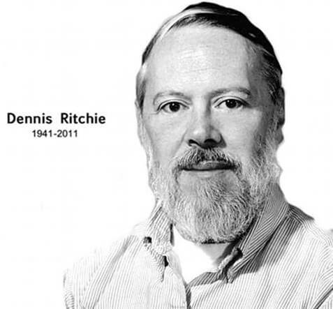

The history of C-language is interesting to know. The C-language is a general-purpose and procedural-oriented programming language. It is a structured and machine-independent programming language. It was developed by Dennis Ritchie in 1972 at the AT&T Bell Laboratories. It was developed along with the UNIX operating system, and is strongly linked with UNIX operating system. History of C language revolves around development as a system implementation language to write an operating system. In terms of the history of C language, its main features include low-level memory access as well as high-level memory access (so it is a middle-level programming language), a handy set of keywords, and a neat and clean style, these features make C programming language suitable for system programming. C supports a wide variety of built-in functions, standard libraries and header files. It follows a top-down approach.

Many languages have derived syntax directly or indirectly from the C programming language. For example, C++ is closely a superset of the C language. Also, C programming language is very popular for system-level apps. The base or father of programming languages is ‘ALGOL’ It was first introduced in 1960. ‘ALGOL’ was used on a large basis in European countries. ‘ALGOL’ introduced the concept of structured programming to the developer community. In 1967, a new computer programming language was announced called as ‘BCPL’ which stands for Basic Combined Programming Language. BCPL was designed and developed by Martin Richards, especially for writing system software. This was the era of programming languages. Just after three years, in 1970 a new programming language called ‘B’ was introduced by Ken Thompson that contained multiple features of ‘BCPL’This programming language was created using UNIX operating system at AT&T and Bell Laboratories. Both the ‘BCPL’ and ‘B’ were system programming languages.